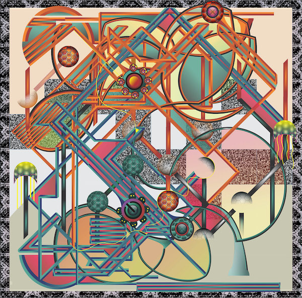
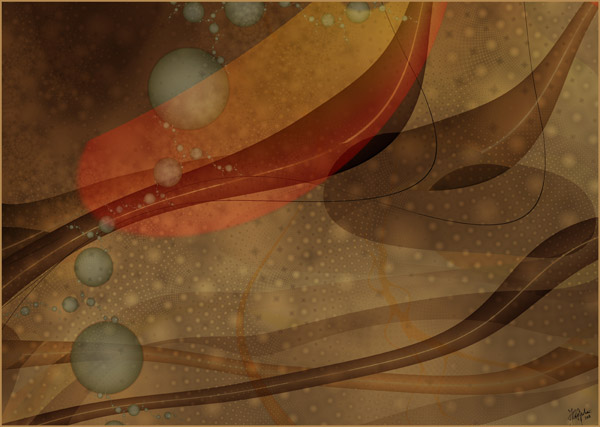
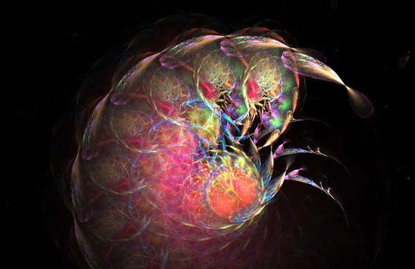
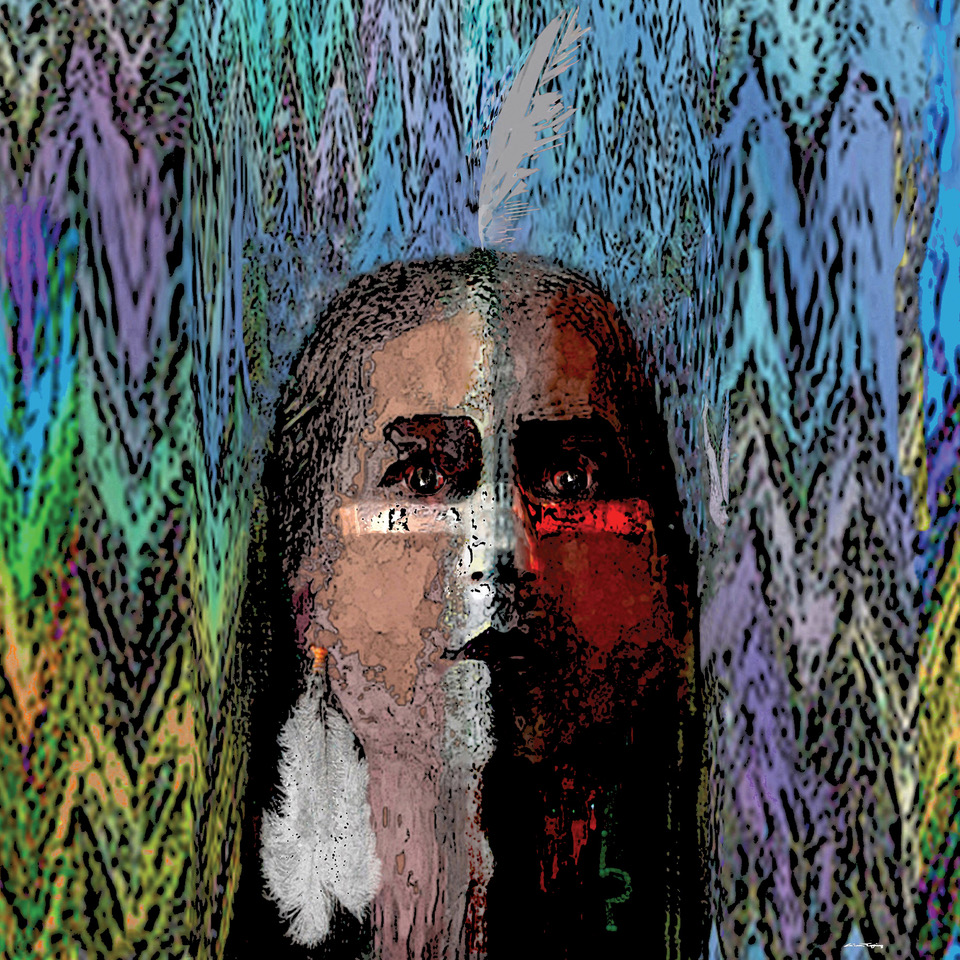
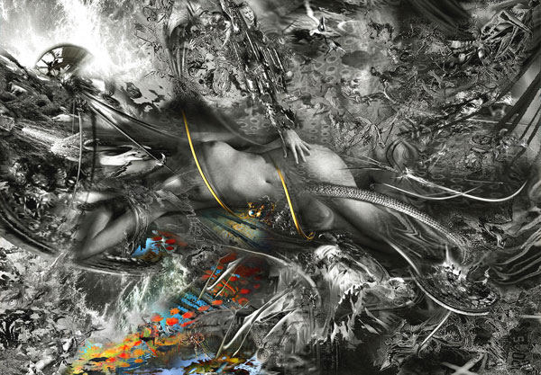
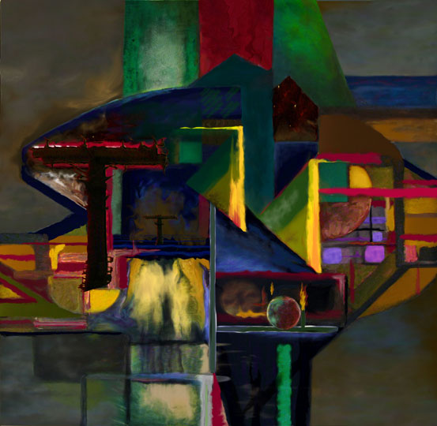
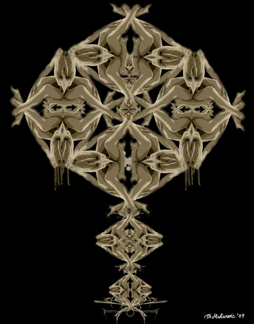
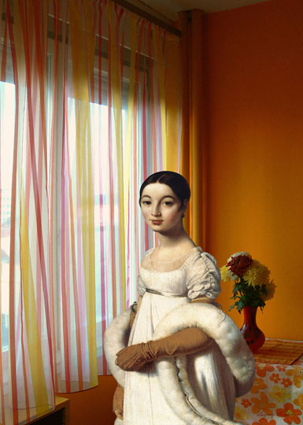
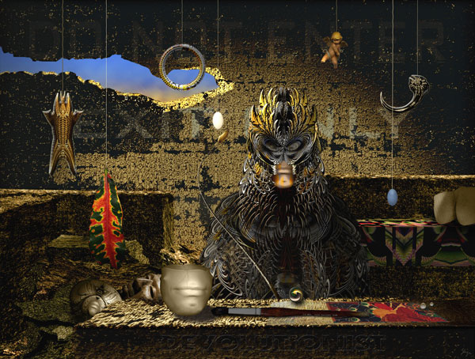
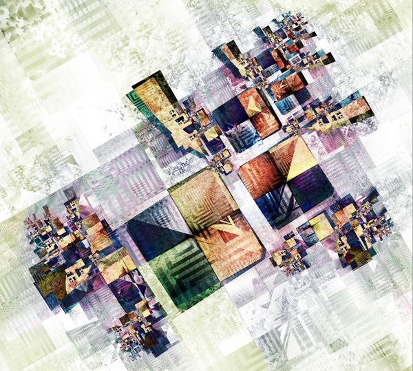

Machine Language 
by Andy Cole
09/11/2021
Summer Meets Autumn 
by Juliette Gribnau
09/12/2021
Creature 
by Jörg Riedel
09/13/2021
Kiltman Unmasked 
by Gina Topping
09/14/2021
Crime of Seduction 
by Werner Hornung
09/15/2021
Technos 
by Randy Morris
09/16/2021
Keyed In 
by Bisera Makarevic
09/17/2021
Mademoiselle Rivière 
by Vladimir Rankovic
09/18/2021
Art Devolution 
by Shige Yamada
09/19/2021
Round the Block 
by Yvonne Mous
09/20/2021